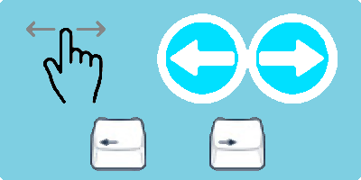
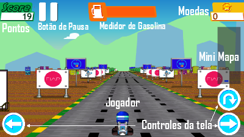

Instruções do jogo
Para o controle do nosso personagem, poderemos utilizar o teclado, superficie Touch e os botoes da tela, tanto com o mouse como com touch
Botões de seta, esquerda e direita, botões laterais da tela, ou deslizar a tela para esquerda ou direita, movimentará o carrinho para o respectivo lado
Botões de seta para cima, botão na tela de pular, ou deslizar para cima, fará o personagem pular
Botão de espaço, botão na tela de pausa, ou deslizar para baixo, e o jogo entrará em modo pause
Durante o jogo, o jogador precisará desviar dos obstaculos, na tela de jogo, ele contará com os controles, alem de verificar a gasolina, os pontos e moedas atuais, e contará com um mapa para verificar os perigos a frente.
Ao pausar, o jogador, poderá retornar ao jogo, reiniciar ou ver as configurações.
Nas configurações, temos os controles de volume e mute de som e música, o controle de resolução e textura da pista, caso o jogo esteja lento, aqui poderemos melhorar a velocidade diminuindo a resolução, ou retirando a textura, por fim, podemos tirar os controles de tela, para quem gosta de uma tela mais limpa!